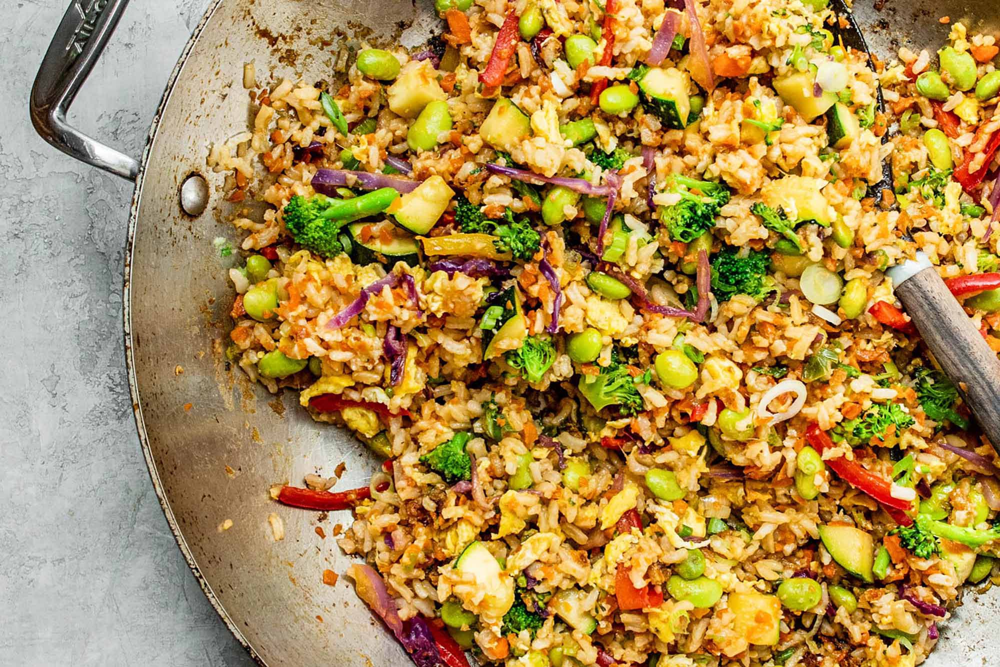

Description
This recipe is very common and can be easily made by anyone. This is made specifically for my taste, but one could easily modify the recipe if needed.
Ingredients
- Rice
- Broccoli
- Mushrooms
- Frozen peas and carrots
- Chicken
- Eggs
Steps
- Cook the rice and have it ready before cooking the rest
- Fry the eggs and then put aside
- Fry the chicken and then put aside, make sure to not overcook it or else it will become hard.
- Put all the vegetables together and cook until ready/soft
- Add in the cooked rice, chicken and eggs and mix to desired liking
- Make sure to season and add any flavours as see fit throughout any of the steps
- Serve and enjoy!
Go Back